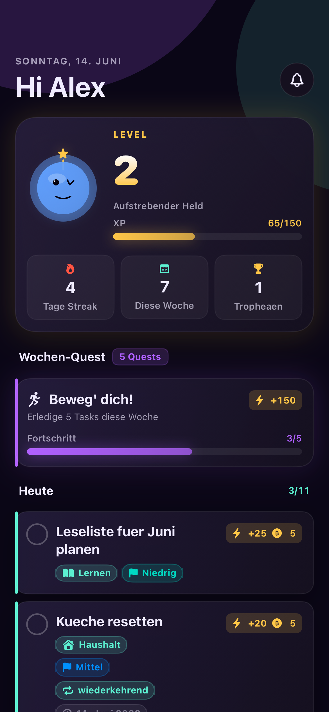
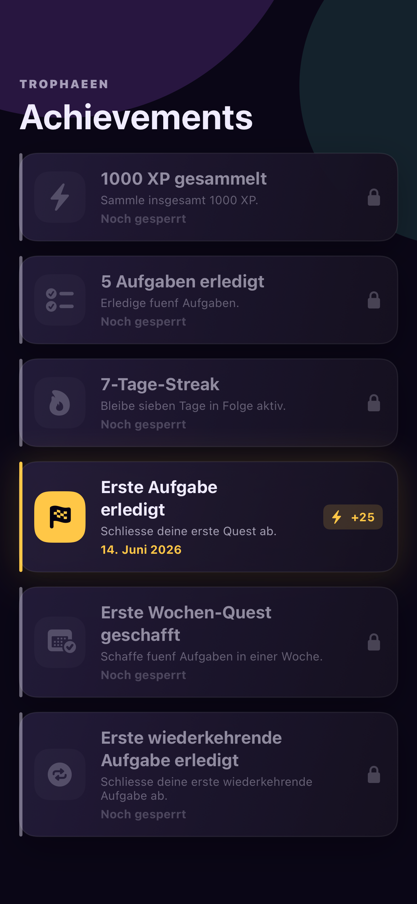
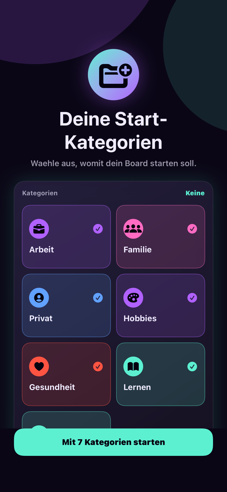

KanToDo verwandelt deine To-Do-Liste in ein Kanban-Board mit XP, Coins, Streaks und Trophäen. Erledige Aufgaben, level dich hoch — und bleib dabei.

Ein Board für deinen Kopf, ein Belohnungssystem für deine Motivation. Alles an einem Ort.
Dashboard mit Level, XP-Bar, Tages-Streak und Wochen-Quest. Aufgaben direkt abhaken und sofort Belohnung kassieren.

XP, Coins, Level-Ups und Achievements für jede erledigte Aufgabe. Streaks halten dich Tag für Tag am Ball.

Arbeit, Familie, Gesundheit, Hobbys — ordne Aufgaben nach Kategorien, Priorität oder der Eisenhower-Matrix.
Tägliche Gewohnheiten verfolgen und Streaks aufbauen.
Verdiente Coins gegen selbst gewählte Belohnungen eintauschen.
Sieh, was du geschafft hast — pro Tag und pro Kategorie.
Deine Aufgaben synchron auf iPhone, iPad und Mac.
Akzentfarbe und App-Icon nach deinem Geschmack.
Deine Daten bleiben auf deinem Gerät und in deiner iCloud.
Lade KanToDo und verwandle erledigte Aufgaben in XP, Coins und Trophäen.
Fragen, Wünsche oder ein Problem? Wir helfen gern weiter — über unseren Support.
Wir nehmen deine Privatsphäre ernst. Mehr dazu in der Datenschutzerklärung.
Auch innerhalb der App: Details in der Datenschutzerklärung für KanToDo.